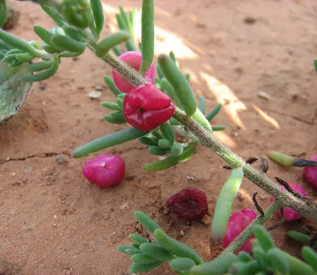

Wild fruit · All year
Ruby saltbush
Enchylaena tomentosa
Also called Ruby saltbush
Ruby saltbush is a wild fruit you can forage all year round in Arid centre, South-west and Temperate south-east. Small sprawling shrub with fleshy, woolly leaves and tiny red or yellow berries.

When is ruby saltbush in season in Australia?
Ruby saltbush is usually in season all year round. Timing shifts with weather, latitude and altitude.
Where does ruby saltbush grow in Australia?
Ruby saltbush grows across Australia. Regions: Arid centre, South-west, Temperate south-east.
How do you recognise ruby saltbush?
Small sprawling shrub with fleshy, woolly leaves and tiny red or yellow berries.
How do you harvest ruby saltbush?
Pick only fully ripe fruit that comes away easily, into a shallow container so it doesn't crush. Leave plenty on the plant for birds and wildlife.
How do you eat ruby saltbush?
Sweet-salty berries as a snack.
How do you store ruby saltbush?
Best fresh.